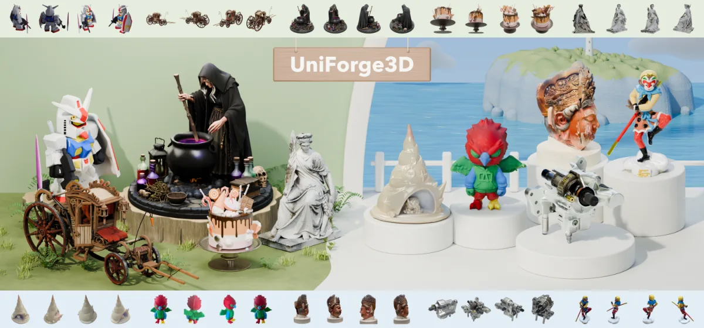
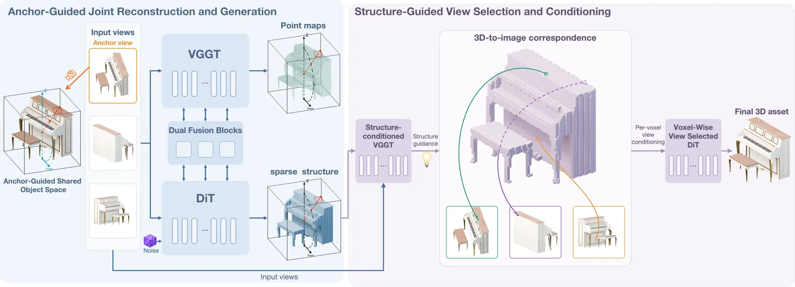
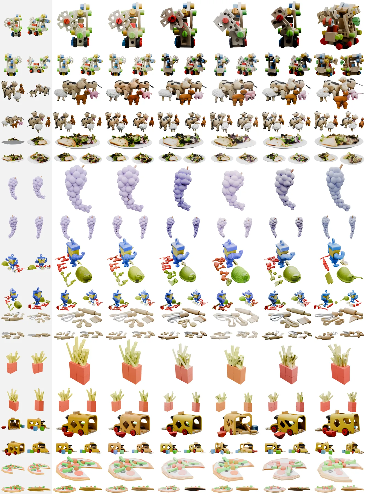
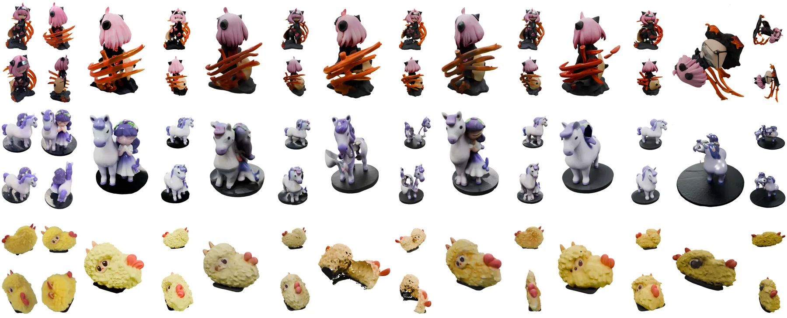
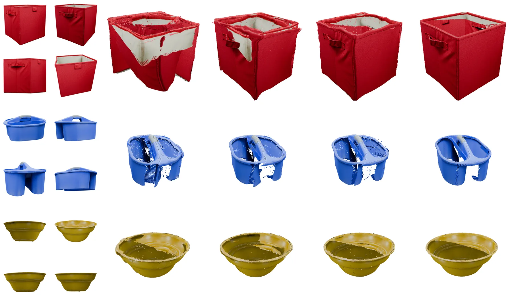
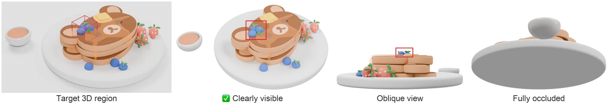

UniForge3D：在共享锚点引导空间中联合 3D 重建与生成
UniForge3D: Joint 3D Reconstruction and Generation in a Shared Anchor-Guided Space
问题：稀疏无位姿输入下「保留观测 + 补全未见」两个目标冲突，根因是相机相关重建与规范空间生成之间的坐标失配，以及「所有视图都参与条件化」带来的证据污染。做法：定义共享锚点引导空间（跟锚点视图方位角、物体保持竖直），其下重建分支（VGGT 基座）与生成分支（TRELLIS.2 基座）双向交换特征，结构引导的特征交互用一个「条件残差 + 时间门控」模块注入；再由点图预测出像素–体素对应，为每个体素选最相关视图做细节生成。结果：Toys4K 上 PSNR 27.428（最佳基线 Mix3R 23.907）、CD 1.4196（基线 2.3445）、F-score 0.8899（基线 0.7343）；GSO 上 PSNR 24.826（基线 ReconViaGen v0.5 22.774）、CD 1.4047（基线 2.3202）。消融：锚点引导联合（IoU 0.5827）优于「仅 DINO 条件化」（0.4261）与「DINO-VGGT 拼接」（0.5533）；规范空间（0.4601）与跨空间（0.4563）都更差；体素级视图选择（PSNR 27.207）优于全视图条件化（26.892）。
Toys4K PSNR
Toys4K CD
anchor-guided IoU
point map error
作者、单位与技术谱系 · Research context
作者与单位
研究脉络
- TRELLIS.2（三维生成基座）方法基座关系：生成分支建立在预训练 TRELLIS.2 之上：512/1024 形状生成器与纹理生成器均从其生成器初始化，denoiser 用 rank-128 LoRA 微调。[官方 HTML 全文（训练细节与附录 A）]
- VGGT（三维重建基座）方法上游关系：重建分支从预训练 VGGT 初始化并全量微调，负责在共享锚点空间中预测每视图点图，是像素–体素对应的来源。[官方 HTML 全文（训练细节与消融表）]
- DINOv3（冻结图像条件）方法上游（技术依赖）关系：图像条件特征来自冻结的 DINOv3，论文把「仅 DINO 条件化」与「DINO-VGGT 拼接」作为消融对照。[官方 HTML 全文（训练细节与消融表）]
合作网络
- 跨机构共同署名（三单位）Peking University、Math Magic、The Hong Kong University of Science and Technology → UniForge3D 六位作者关系：共同署名 / 跨机构（含工业界）[arXiv 官方 HTML（首页作者与单位）]
- 官方项目页UniForge3D → xishuxishu.github.io/uniforge3d-project关系：官方项目页（可核验）[arXiv 摘要页与官方 HTML（摘要/comment）]
- 对生成/重建骨干与数据的依赖UniForge3D 训练与评测 → TRELLIS.2、VGGT、DINOv3、TRELLIS-500K、Toys4K、GSO关系：官方模型/数据集依赖[官方 HTML 全文（训练细节与实验设置）]
作者与单位来自论文首页署名（论文报告的事实）；「基座/上游」定位来自论文训练细节的明确表述（基于来源的解读）；跨机构合作边以首页署名映射为据，未推断导师/师生关系；代码仓库地址未在论文中给出，已标为待核验。
方法本质拆解 · What actually changed
是不是微调？——多阶段微调 + LoRA，联合模型 60K 迭代
是微调为主、联合训练为辅：重建分支从预训练 VGGT 初始化（全量微调、动态 batch 最多每卡 24 图），生成分支从预训练 TRELLIS.2 初始化（512/1024 形状与纹理阶段用 rank-128 LoRA 微调 denoiser、全量训练特征适配器）。联合模型建立在预训练 TRELLIS.2 与 VGGT 之上，用 LoRA（rank 64 与 32）适配、全量训练新引入的交互模块，DINOv3 冻结，峰值学习率 5×10⁻⁵，训练 60K 次迭代、global batch 128、32× A800。形状与纹理阶段用预计算 latent 上的 flow matching，训练时形状 latent 固定、对纹理 latent 做 flow matching。
有没有额外约束？——零初始化残差 + 时间门控，且每体素只选一个最相关视图
接口约束：跨分支交互通过「条件残差」注入，其输出零初始化并带时间门控投影，使新模块从零开始学、由门控决定何时生效，避免训练初期破坏预训练分支的先验。条件化约束：不为每个三维位置使用全部视图，而是先由结构条件化的点图预测建立像素–体素对应，再为每个体素只挑选最有信息量的输入视图，用其特征引导细节生成（体素级视图选择 PSNR 27.207 对全视图 26.892）。
推理/后端到底做了什么？——一次前向产出完整资产，先结构后细节
推理时先由联合模型预测每视图点图与完整稀疏体素结构，再据此建立像素–体素对应、为每个体素挑选最相关视图，最后由 512 与 1024 两个形状生成器与纹理生成器依次解码出完整三维资产。流程不依赖额外的位姿求解或人工标注，输入是稀疏、无位姿图像；后端由预训练 TRELLIS.2 生成分支、VGGT 重建分支与本文新引入的交互模块组成。论文未报告推理时延与显存占用，故「推理成本」一项在此标记为待核验。
方法本质是什么？——统一坐标系 + 按相关性取证据，让重建与生成互相引导
本质上做了两件事：把重建与生成放进同一个锚点引导坐标系以消除坐标失配，以及让每个体素只从最相关的视图取证据以避免无关内容污染。它改变的是两分支之间特征交互的方式与条件化粒度，而不改变预训练分支本身的能力上限。明确没有做的是：没有引入显式的大范围形变模型、没有做真实场景的域适应、也没有单独分离「零初始化门控残差」相对普通相加的收益（属待核验）。
输入/先验 = 稀疏、无位姿图像 + 预训练 VGGT 与 TRELLIS.2 权重 + 冻结 DINOv3 图像条件；改变的位置 = 两分支之间的坐标空间（改为共享锚点引导空间）与条件化粒度（每体素只选最相关视图）；约束或合并动作 = 条件残差零初始化 + 时间门控注入、按像素–体素对应做视图选择、多阶段 LoRA 微调显式阶段划分；直接效果 = Toys4K PSNR 27.428 / CD 1.4196（基线 23.907 / 2.3445），GSO PSNR 24.826，且换掉共享坐标空间后 IoU 从 0.5827 掉到约 0.46。

动机与问题Motivation
动机与问题
从稀疏、无位姿图像生成完整三维资产时，重建分支按相机坐标系预测点图，生成分支在物体的规范坐标系里做形状合成，二者各说各的坐标系；这种失配让「用重建的几何去引导生成」变得困难，因为需要先把两套坐标对齐。第二个障碍是条件化的相关性：若把每个三维位置都用全部输入视图去条件化，与目标无关的视图内容会污染几何证据，导致局部细节恢复变差。论文因此把目标设定为：既要在统一坐标系内让重建与生成互相引导，又要让每个体素只从「与它最相关」的视图取信息。
方法Method
方法总览
共享锚点引导空间：选择输入中的锚点视图，定义该空间跟随锚点视图的方位角并保持物体竖直，使重建与生成在同一坐标系下工作，从而消除坐标失配。双分支与双向交互：重建分支以 VGGT 为基座、生成分支以 TRELLIS.2 为基座，两者在同一空间内双向交换特征，共同预测每视图点图与完整的稀疏体素结构；结构引导的特征交互用一个条件残差模块实现（残差输出零初始化、带时间门控），使引入的交互不会在训练初期破坏预训练先验。像素–体素对应与视图选择：用生成的结构条件化点图预测，建立像素到体素的对应；据此为每个体素挑选最有信息量的输入视图，再用这些视图的特征引导细节生成。
关键技术细节
训练组织分多阶段：先训练结构引导的重建网络（从预训练 VGGT 初始化、全量微调，动态 batch 最多每卡 24 图、峰值学习率 5×10⁻⁵），再分别训练 512 与 1024 的形状生成器（从预训练 TRELLIS.2 形状生成器初始化、对 denoiser 用 rank-128 LoRA、特征适配器全量训练），最后训练纹理生成器（同样 rank-128 denoiser LoRA + 全量特征适配器）。联合模型阶段：生成与重建两分支分别建立在预训练 TRELLIS.2 与 VGGT 之上，使用 LoRA（rank 64 与 32），新引入的交互模块全量训练，DINOv3 保持冻结，峰值学习率 5×10⁻⁵；为支持 classifier-free guidance，以 0.1 概率随机丢弃图像条件。形状与纹理阶段均用预计算 latent 上的 flow matching（形状损失即为 flow 损失），训练时保持形状 latent 固定、对纹理 latent 做 flow matching。关键设计取舍：条件残差输出零初始化 + 时间门控，使交互模块「从零开始学、由门控决定何时起作用」，避免一开始就扰动预训练分支。

实验Experiments
实验设置
数据与规模：训练用 TRELLIS-500K 的一个子集，含 210K 个物体；评测在 Toys4K 与 GSO 上各取 1000 个测试物体；全部模型在 32× NVIDIA A800 上训练，联合模型 global batch 128、训练 60K 次迭代。指标：外观用 PSNR/SSIM/LPIPS（渲染图与真实图比较），几何用 Chamfer Distance（CD）与 F-score；消融另用体素 IoU 与点图误差。对照：外观/几何主表对比包括 Mix3R、ReconViaGen v0.5 等强基线（Toys4K 上最强基线为 Mix3R，GSO 上为 ReconViaGen v0.5）；消融对比包括「仅 DINO 条件化」「DINO-VGGT 拼接」「规范空间」「跨空间」「全视图条件化」等。
实验数字与比较
Toys4K（来源：论文表 1/2，1000 个测试物体）：本文 PSNR 27.428 对最强基线 Mix3R 23.907；CD 1.4196 对 2.3445；F-score 0.8899 对 0.7343——外观与几何同时领先。GSO（来源：论文表 1，1000 个测试物体）：本文 PSNR 24.826 对基线 ReconViaGen v0.5 22.774；CD 1.4047 对 2.3202。视图选择消融（来源：论文消融表）：体素级视图选择 PSNR 27.207，优于全视图条件化 26.892，证明「按相关性选视图」确实有效。交互/空间消融（来源：论文消融表，IoU）：锚点引导联合 0.5827 > DINO-VGGT 拼接 0.5533 > 「仅 DINO 条件化」0.4261；在坐标空间上，规范空间 0.4601 与跨空间 0.4563 都明显差于共享锚点空间；结构条件化使点图误差从仅图像 VGGT 的 4.846 降到 3.313。
消融/失败边界
最有信息量的消融是坐标空间的选择：把共享锚点空间换成「规范空间」（0.4601）或「跨空间」（0.4563），IoU 相比共享锚点空间（0.5827）大幅下降，说明论文归因的「坐标失配」确实是主要障碍，而不是次要工程细节。条件化方式的消融同样给出明确变化：「仅 DINO 条件化」IoU 只有 0.4261，把 DINO 与 VGGT 特征简单拼接可得 0.5533，而本文的锚点引导联合交互达到 0.5827——即「简单拼接」只能补一部分，结构引导的交互才是把两者结合好的关键。另外两组边界：体素级视图选择优于把全部视图都给进去（27.207 vs 26.892），说明无关视图确实带来污染；用生成的结构去条件化重建，把点图误差从 4.846 降到 3.313，说明生成先验反过来也在帮助重建。
局限与迁移Limitations & Transfer
局限与待核验
我们的待核验项（作者未在正文集中列限制，故以本刊条目为主）：(a) 训练数据是合成渲染（TRELLIS-500K 子集），而真实采集（含真实光照、反光、严重遮挡）只在 Toys4K/GSO 这类物体级数据集上评测，向真实场景迁移的稳健性未被检验；(b) 评测规模为 Toys4K、GSO 各 1000 个物体，但论文未报告跨数据集的方差或多次运行的波动，指标差异的稳定性需核对；(c) 训练是多阶段流水线（结构引导重建 → 512/1024 形状 → 纹理 → 联合），阶段间依赖较强，若中间阶段次优是否可被后续阶段纠正未做消融；(d) LoRA 秩与「条件残差零初始化 + 时间门控」的贡献未单独分离，难以判断增益来自 LoRA 容量还是交互设计；(e) 项目页已公开，但代码与模型权重是否全部发布需实际核对。
与你研究路线的关系
可迁移点有三。第一，「先在共享坐标系里对齐、再做跨模块交互」是一个通用原则：当你把两个用不同坐标系工作的模块（例如相机系点图与物体系形状、或地图系与体素系）耦合时，先定义一个共同参考系（这里是锚点视图方位角 + 竖直约束）往往比事后做坐标变换更稳；论文里换成规范空间/跨空间就掉到 0.46 左右，是有说服力的对照。第二，「按相关性选择条件化视图」可直接搬到多视图/多传感器融合：为每个空间位置只挑最相关的观测源，比把所有观测一视同仁拼接更有效（27.207 vs 26.892），也与你在 GNSS/视觉/惯性加权时的直觉一致——关键是「怎么定义相关性」，论文用像素–体素对应来定义。第三，结构先验可以双向使用：论文不仅用重建引导生成，也用生成的体素结构去条件化点图预测（点图误差 4.846→3.313），提示在状态估计里也可以让「重建结果」反向约束「观测模型」。下一步实验建议：(a) 在你的多传感器数据上试「按位置选最相关观测」的加权策略，与全量加权做 A/B；(b) 若你的管线里有「基于先验的补全/外插」模块，把零初始化 + 门控的残差注入方式照搬，验证其是否比直接相加更稳定；(c) 报告真实采集（非合成）上的迁移结果，作为该范式能否进入你工程链路的判据。







